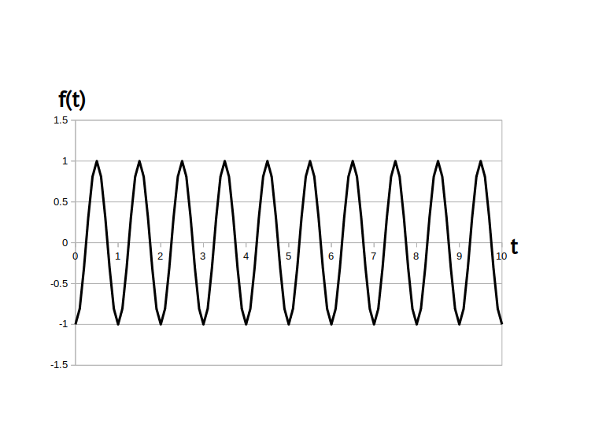

「時間領域アナログサイン波」あるいは「正弦波」は sin 関数または cos 関数を時間領域アナログ信号とみなした信号で、交流(AC: Alternating Current)信号、シヌソイドなどとも言います。
時間領域アナログサイン波の定義式は次の通りです。
\[ f(t) = a \cdot \sin( w \cdot t + \phi ) \]
または
\[ f(t) = a \cdot \cos( w \cdot t + \phi ) \]$a$・・・振幅、実数の定数、範囲は実数全体、単位は扱う信号の種類による(ボルト、アンペア、度、etc.)
$w$ ・・・角周波数、実数の 定数、範囲は $w \geq 0$、単位は [rad/秒]
$t$ ・・・時刻、実数の 変数、単位は [秒]
$\phi$ ・・・初期位相、ファイと呼ぶ、実数の 定数、範囲は $-\pi \leq \phi \leq \pi$、単位は [rad]
※1 cos 関数を使った場合でもサイン波と呼びます。理由は以下の公式より、cos 関数も sin 関数も初期位相が違うだけで、数学的には同一視出来るからです。
\[ a \cdot \cos( w \cdot t + \phi) = a \cdot \sin\{ w \cdot t + (\phi + \pi/2) \} \]※2 角周波数 $w$ [rad/秒] は負の値を取る事も可能ですが今の所 0 [rad/秒]以上とします。負の角周波数については複素正弦波のところで学びます。
※3 初期位相 $\phi$ [rad] が本来取り得る範囲は実数値全体、つまり $-\infty < \phi < \infty$ なのですが、
という公式から
サイン波は初期位相 $\phi$ に関して周期 $2\pi$ [rad] で周期的
であるので、一般的には $\phi$ の取り得る範囲を $-\pi \leq \phi \leq \pi$ とすることが多いです。
もしこの範囲を超えている場合はこの範囲内に収まるように $\phi$ の値を変換します。
例を挙げると
$\phi = 3 \pi /2$ → $\phi = -\pi/2 \ ( = 3 \pi /2 - 2\pi)$
と変換できますし
$\phi = -3 \pi /2$ → $\phi = \pi/2 \ ( = -3 \pi /2 + 2\pi)$
と変換できます。
なお $t$ は変数ですが、$a$、$w$、$\phi$は定数パラメータなので事前に値を決めておきます。
では時間領域アナログサイン波の例として
\[ f(t) = 1 \cdot \sin( 2\pi \cdot t -\pi/2 ) \]のグラフを図 1 に示します。
